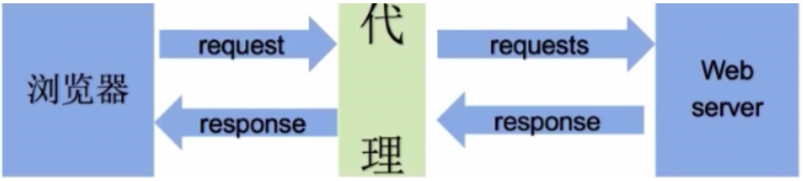

requests 基础操作
requests是一个基于网络请求的模块。可以使用程序模拟浏览器上网。
环境安装
pip install requests
编码流程
- 指定url（输入一个网址）
- 发起请求（按下回车）
- 获取响应数据（请求到的数据）
- 持久化存储
案例 1 最简单的 request 请求
东方财富首页数据爬取
import requests
# 1.指定要爬取的地址
main_url = "https://www.eastmoney.com/"
# 2.发起请求
response = requests.get(main_url)
# 3.获取响应数据
response.encoding = "utf-8"
print(response.text)
# 4.保存数据
with open('dongfang.html', 'w', encoding='utf-8') as f:
f.write(response.text)
案例 2 传参
爬取51游戏中任何游戏对应的搜索结果页面数据
import requests
#1.指定url
game_title = input('enter a game name:')
params = { #字典是用于封装请求参数
'q':game_title
}
url = 'https://game.51.com/search/action/game/'
#2.发起请求
#get是基于指定的url和携带了固定的请求参数进行请求发送
response = requests.get(url=url,params=params)
#3.获取响应数据
page_text = response.text #text表示获取字符串形式的响应数据
# print(page_text)
#4.持久化存储
fileName = game_title + '.html'
with open(fileName,'w') as fp:
fp.write(page_text)
案例 3 User-Agent
中国人事考试网
-
url：http://www.cpta.com.cn/
-
爬虫模拟浏览器主要是模拟请求参数和主要的请求头。
-
User-Agent:请求载体的身份标识。
- 使用浏览器发请求，则请求载体就是浏览器
- 使用爬虫程序发请求，则请求载体就是爬虫程序
-
-
反爬机制：UA检测
- 网站后台会检测请求的载体是不是浏览器，如果是则返回正常数据，不是则返回错误数据。
-
反反爬机制：UA伪装
- 将爬虫发起请求的User-Agent伪装成浏览器的身份。
直接请求会提示：很抱歉，由于您访问的URL有可能对网站造成安全威胁，您的访问被阻断。
import requests
# 1.指定要爬取的地址
main_url = "http://www.cpta.com.cn/"
#User-Agent:请求载体（浏览器，爬虫程序）的身份表示
header = {
'User-Agent':'Mozilla/5.0 (Macintosh; Intel Mac OS X 10_15_7) AppleWebKit/537.36 (KHTML, like Gecko) Chrome/115.0.0.0 Safari/537.36'
}
# 2.发起请求
response = requests.get(main_url, headers=header)
# 3.获取响应数据
response.encoding = "utf-8"
print(response.text)
# 4.保存数据
with open('cpta.html', 'w', encoding='utf-8') as f:
f.write(response.text)
中国人事考试网---站内搜索
import requests
url = 'http://www.cpta.com.cn/category/search.html'
param = {
"keywords": "人力资源",
"搜 索": "搜 索"
}
header = {
'User-Agent':'Mozilla/5.0 (Macintosh; Intel Mac OS X 10_15_7) AppleWebKit/537.36 (KHTML, like Gecko) Chrome/115.0.0.0 Safari/537.36'
}
#发起了post请求：通过data参数携带了请求参数
response = requests.post(url=url,data=param,headers=header)
page_text = response.text
with open('renshi.html','w') as fp:
fp.write(page_text)
#通过抓包工具定位了指定的数据包：
#提取：url，请求方式，请求参数，请求头信息
案例 4
智慧职教（动态加载数据爬取）(重点)
-
抓取智慧职教官网中的【专业群板块下】的所有数据
-
url : https://www.icve.com.cn/portal_new/course/course.html
-
测试：直接使用浏览器地址栏中的url，进行请求发送查看是否可以爬取到数据？
-
不用写程序，基于抓包工具测试观察即可。
-
经过测试发现，我们爬取到的数据并没有包含详情数据，why？
-
动态加载数据：
-
在一个网页中看到的数据，并不一定是通过浏览器地址栏中的url发起请求请求到的。如果请求不到，一定是基于其他的请求请求到的数据。
-
动态加载数据值的就是：
- 不是直接通过浏览器地址栏的url请求到的数据，这些数据叫做动态加载数据。
-
如何获取动态加载数据？
-
确定动态加载的数据是基于哪一个数据包请求到的？
-
数据包数据的全局搜索：
-
点击抓包工具中任何一个数据包
-
control+f进行全局搜索（弹出全局搜索框）
- 目的：定位动态加载数据是在哪一个数据包中
-
定位到动态加载数据对应的数据包，模拟该数据包进行请求发送即可：
-
从数据包中提取出：
- url
- 请求参数
-
-
注意：请求头中需要携带Referer。（体现模拟浏览器的力度）
-
import requests
import time
fp = open('data.txt','w')
for page in range(1,6):
time.sleep(1)
url = 'https://www.icve.com.cn/portal/course/getNewCourseInfo?page='+str(page)
headers = {
'User-Agent':'Mozilla/5.0 (Macintosh; Intel Mac OS X 10_15_7) AppleWebKit/537.36 (KHTML, like Gecko) Chrome/124.0.0.0 Safari/537.36',
'Referer':'https://www.icve.com.cn/portal_new/course/course.html'
}
dic = {
"order": "",
"kczy": "",
"keyvalue": "",
"printstate": ""
}
response = requests.post(url=url,headers=headers,data=dic)
dic = response.json()
for item_dic in dic['list']:
course_title = item_dic['Title']
teacher_name = item_dic['TeacherDisplayname']
school_title = item_dic['UnitName']
print(course_title,teacher_name,school_title)
fp.write(course_title+'-'+teacher_name+'-'+school_title+'\n')
fp.close()
案例 5
图片数据爬取
#方式1：
import requests
url = 'https://img0.baidu.com/it/u=540025525,3089532369&fm=253&fmt=auto&app=138&f=JPEG?w=889&h=500'
response = requests.get(url=url)
#content获取二进制形式的响应数据
img_data = response.content
with open('1.jpg','wb') as fp:
fp.write(img_data)
#方式2
from urllib.request import urlretrieve
#图片地址
img_url = 'https://img0.baidu.com/it/u=4271728134,3217174685&fm=253&fmt=auto&app=138&f=JPEG?w=400&h=500'
#参数1：图片地址
#参数2：图片存储路径
#urlretrieve可以根据图片地址将图片数据请求到直接存储到参数2表示的图片存储路径中
urlretrieve(img_url,'1.jpg')
- 爬取图片的时候需要做UA伪装使用方式1，否则使用方式2
案例6
肯德基（POST请求、动态加载数据、UA检测）
-
http://www.kfc.com.cn/kfccda/storelist/index.aspx
-
将餐厅的位置信息进行数据爬取
- 爬取多页数据
import requests
head = { #存放需要伪装的头信息
'User-Agent':'Mozilla/5.0 (Macintosh; Intel Mac OS X 10_15_7) AppleWebKit/537.36 (KHTML, like Gecko) Chrome/97.0.4692.71 Safari/537.36'
}
#post请求的请求参数
data = {
"cname": "",
"pid": "",
"keyword": "天津",
"pageIndex": "1",
"pageSize": "10",
}
#在抓包工具中：Form Data存放的是post请求的请求参数，而Query String中存放的是get请求的请求参数
url = 'http://www.kfc.com.cn/kfccda/ashx/GetStoreList.ashx?op=keyword'
#在post请求中，处理请求参数的是data这个参数不是params
response = requests.post(url=url,headers=head,data=data)
#将响应数据进行反序列化
page_text = response.json()
for dic in page_text['Table1']:
name = dic['storeName']
addr = dic['addressDetail']
print(name,addr)
案例 7
- url：https://www.xiachufang.com/
- 实现爬取下厨房网站中任意菜谱搜索结果数据爬取
通过抓包工具的分析发现，搜索菜谱的数据包有两个请求参数：
- keyword：搜索的关键字
- cat：1001固定形式
import requests
#请求头
headers = {
'User-Agent':'Mozilla/5.0 (Macintosh; Intel Mac OS X 10_15_7) AppleWebKit/537.36 (KHTML, like Gecko) Chrome/114.0.0.0 Safari/537.36'
}
title = input('请输入菜名：')
params = {
'keyword':title,
'cat':'1001'
}
#1.指定url
url = 'https://www.xiachufang.com/search/'
#2.发起请求
response = requests.get(url=url,headers=headers,params=params)
#处理乱码
response.encoding = 'utf-8' #gbk
#3.获取响应数据
page_text = response.text
#4.持久化存储
fileName = title + '.html'
with open(fileName,'w') as fp:
fp.write(page_text)
案例 8
简历数据爬取
https://sc.chinaz.com/jianli/free.html
import requests
from lxml import etree
url = 'https://sc.chinaz.com/jianli/free.html'
headers = {
'User-Agent':'Mozilla/5.0 (Macintosh; Intel Mac OS X 10_15_7) AppleWebKit/537.36 (KHTML, like Gecko) Chrome/115.0.0.0 Safari/537.36'
}
response = requests.get(url=url,headers=headers)
response.encoding = "utf-8"
page_text = response.text
#数据解析:简历名称+详情页的url
tree = etree.HTML(page_text)
div_list = tree.xpath('//*[@id="container"]/div')
for div in div_list:
title = div.xpath('./p/a/text()')[0]+'.rar'
print(title)
detail_url = div.xpath('./p/a/@href')[0]
print(detail_url)
#对详情页的url发起请求
detail_page_response = requests.get(url=detail_url,headers=headers)
detail_page_response.encoding = "utf-8"
detail_page_text = detail_page_response.text
# print(detail_page_text)
tree = etree.HTML(detail_page_text)
download_url = tree.xpath('//*[@id="down"]/div[2]/ul/li[1]/a/@href')[0]
#在下载请求建立模板
data = requests.get(url=download_url,headers=headers).content
with open(title,'wb') as fp:
fp.write(data)
print(title,'保存下载成功！')
# print("******")
图片懒加载：
案例 9
-
url：https://sc.chinaz.com/tupian/meinvtupian.html
- 爬取上述链接中所有的图片数据
-
主要是应用在展示图片的网页中的一种技术，该技术是指当网页刷新后，先加载局部的几张图片数据即可，随着用户滑动滚轮，当图片被显示在浏览器的可视化区域范围的话，在动态将其图片请求加载出来即可。（图片数据是动态加载出来）。
-
如何实现图片懒加载/动态加载？
- 使用img标签的伪属性（指的是自定义的一种属性）。在网页中，为了防止图片马上加载出来，则在img标签中可以使用一种伪属性来存储图片的链接，而不是使用真正的src属性值来存储图片链接。（图片链接一旦给了src属性，则图片会被立即加载出来）。只有当图片被滑动到浏览器可视化区域范围的时候，在通过js将img的伪属性修改为真正的src属性，则图片就会被加载出来。
-
如何爬取图片懒加载的图片数据？
- 只需要在解析图片的时候，定位伪属性的属性值即可
import requests
from lxml import etree
headers = {
'User-Agent':'Mozilla/5.0 (Macintosh; Intel Mac OS X 10_15_7) AppleWebKit/537.36 (KHTML, like Gecko) Chrome/97.0.4692.71 Safari/537.36'
}
url = 'https://sc.chinaz.com/tupian/meinvtupian.html'
page_text = requests.get(url=url,headers=headers).text
tree = etree.HTML(page_text)
div_list = tree.xpath('/html/body/div[3]/div[2]/div')
for div in div_list:
src = 'https:'+div.xpath('./img/@data-original')[0]
print(src)
防盗链
- 现在很多网站启用了防盗链反爬，防止服务器上的资源被人恶意盗取。什么是防盗链呢？
- 从HTTP协议说起，在HTTP协议中，有一个表头字段：referer，采用URL的格式来表示从哪一个链接跳转到当前网页的。通俗理解就是：客户端的请求具体从哪里来，服务器可以通过referer进行溯源。一旦检测来源不是网页所规定的，立即进行阻止或者返回指定的页面。
- 案例：抓取微博图片，url：http://blog.sina.com.cn/lm/pic/，将页面中某一组系列详情页的图片进行抓取保存，比如三里屯时尚女郎：http://blog.sina.com.cn/s/blog_01ebcb8a0102zi2o.html?tj=1
- 注意：
- 在解析图片地址的时候，定位src的属性值，返回的内容和开发工具Element中看到的不一样，通过network查看网页源码发现需要解析real_src的值。
- 直接请求real_src请求到的图片不显示，加上Refere请求头即可
哪里找Refere：抓包工具定位到某一张图片数据包，在其requests headers中获取
import requests
from lxml import etree
headers = {
'User-Agent':'Mozilla/5.0 (Macintosh; Intel Mac OS X 10_15_7) AppleWebKit/537.36 (KHTML, like Gecko) Chrome/97.0.4692.71 Safari/537.36',
"Referer": "http://blog.sina.com.cn/",
}
url = 'http://blog.sina.com.cn/s/blog_01ebcb8a0102zi2o.html?tj=1'
page_text = requests.get(url,headers=headers).text
tree = etree.HTML(page_text)
img_src = tree.xpath('//*[@id="sina_keyword_ad_area2"]/div/a/img/@real_src')
for src in img_src:
data = requests.get(src,headers=headers).content
with open('./123.jpg','wb') as fp:
fp.write(data)
# break
视频数据爬取
- url：https://www.51miz.com/shipin/
- 爬取当前url页面中营销日期下的几个视频数据。
- 找寻每个视频的播放地址：
- 在video标签下面有一个source标签，其内部的src属性值正好就是视频的播放地址 (补充上https:即可) 。
import requests
from lxml import etree
headers = {
'User-Agent':'Mozilla/5.0 (Macintosh; Intel Mac OS X 10_15_7) AppleWebKit/537.36 (KHTML, like Gecko) Chrome/115.0.0.0 Safari/537.36',
'Referer':'https://www.51miz.com/'
}
url = 'https://www.51miz.com/shipin/'
response = requests.get(url=url,headers=headers)
page_text = response.text
#数据解析
tree = etree.HTML(page_text)
div_list = tree.xpath('/html/body/div[2]/div[2]/div[1]/div[2]/div[2]/div')
for div in div_list:
src_list = div.xpath('./a/div/div/div/video/source/@src')
#要给视频地址进行补全
for src in src_list:
src = 'https:' + src
video_data = requests.get(url=src,headers=headers).content
video_title = src.split('/')[-1]
with open(video_title,'wb') as fp:
fp.write(video_data)
print(video_title,'爬取保存成功！')
break
模拟登录
- http://download.java1234.com/ 直接访问个人中心和登录后访问其个人中心
import requests
headers = {
'User-Agent':'Mozilla/5.0 (Macintosh; Intel Mac OS X 10_15_7) AppleWebKit/537.36 (KHTML, like Gecko) Chrome/123.0.0.0 Safari/537.36',
}
session = requests.Session()
data = {
"userName": "bb328410948",
"password": "bb328410948"
}
session.post('http://download.java1234.com/user/login',data=data,headers=headers)
page_text = session.get('http://download.java1234.com/toUserCenterPage',headers=headers).text
with open('1.html','w') as fp:
fp.write(page_text)
代理（重要）
-
什么是代理
- 代理服务器
-
代理服务器的作用
- 就是用来转发请求和响应

-
在爬虫中为何需要使用代理？
- 有些时候，需要对网站服务器发起高频的请求，网站的服务器会检测到这样的异常现象，则会将请求对应机器的ip地址加入黑名单，则该ip再次发起的请求，网站服务器就不再受理，则我们就无法再次爬取该网站的数据。
- 使用代理后，网站服务器接收到的请求，最终是由代理服务器发起，网站服务器通过请求获取的ip就是代理服务器的ip，并不是我们客户端本身的ip。
-
代理的匿名度
- 透明：网站的服务器知道你使用了代理，也知道你的真实ip
- 匿名：网站服务器知道你使用了代理，但是无法获知你真实的ip
- 高匿：网站服务器不知道你使用了代理，也不知道你的真实ip（推荐）
-
代理的类型（重要）
- http：该类型的代理服务器只可以转发http协议的请求
- https：可以转发https协议的请求
-
如何获取代理?
- 携趣代理：https://www.xiequ.cn/index.html?f301de7f
-
如何使用代理？
- 测试：访问如下网址，返回自己本机ip
import requests
from lxml import etree
headers = {
'User-Agent':'Mozilla/5.0 (Macintosh; Intel Mac OS X 10_15_7) AppleWebKit/537.36 (KHTML, like Gecko) Chrome/98.0.4758.80 Safari/537.36',
}
url = 'http://www.cip.cc/'
page_text = requests.get(url,headers=headers).text
tree = etree.HTML(page_text)
text = tree.xpath('/html/body/div/div/div[3]/pre/text()')[0]
print(text.split('\n')[0])
- 使用代理发起请求，查看是否可以返回代理服务器的ip
import requests
from lxml import etree
headers = {
'User-Agent':'Mozilla/5.0 (Macintosh; Intel Mac OS X 10_15_7) AppleWebKit/537.36 (KHTML, like Gecko) Chrome/98.0.4758.80 Safari/537.36',
}
url = 'http://www.cip.cc/'
page_text = requests.get(url,headers=headers,proxies={'http':'121.234.12.62:4246'}).text
tree = etree.HTML(page_text)
text = tree.xpath('/html/body/div/div/div[3]/pre/text()')[0]
print(text.split('\n')[0])
-
深度测试：
- 案例：https://wz.sun0769.com/political/index/politicsNewest?id=1&page=2
- 对sun网站进行n次请求，直到本机无法访问快代理为止（证明本机ip被快代理封掉了）
- 构建一个代理池（封装了很多代理ip和端口的容器），用于数据的批量爬取
import requests
from lxml import etree
import random
import time
headers = {
'User-Agent': 'Mozilla/5.0 (Macintosh; Intel Mac OS X 10_15_7) AppleWebKit/537.36 (KHTML, like Gecko) Chrome/98.0.4758.80 Safari/537.36',
}
#代理池函数
def get_proxies_pool(url):
ret_dic = requests.get(url=url).json()
# 构建代理池
proxies_list = [] # 存储多个代理服务器
for dic in ret_dic['data']:
ip = dic['ip']
port = dic['port']
dic = {}
dic['https'] = str(ip) + ':' + str(port)
proxies_list.append(dic)
return proxies_list
#用来构建代理池
url = 'http://webapi.http.zhimacangku.com/getip?neek=b090cde57620cd17&num=5&type=2&time=4&pro=0&city=0&yys=0&port=11&pack=0&ts=0&ys=0&cs=0&lb=1&sb=&pb=4&mr=3®ions=&cf=0'
proxy_pool = get_proxies_pool(url)
for page in range(1, 5001):
print('正在爬取第%d页的数据......' % page)
#生成不同页码对应的url
url = 'https://wz.sun0769.com/political/index/politicsNewest?id=1&page=%d' % page
# 从代理池中随机选出一个代理
proxy = random.choice(proxy_pool)
page_text = requests.get(url=url, headers=headers,proxies=proxy).text
time.sleep(0.5)
tree = etree.HTML(page_text)
#随便解析标题内容
li_list = tree.xpath('/html/body/div[2]/div[3]/ul[2]/li')
for li in li_list:
title = li.xpath('./span[3]/a/text()')[0]
print(title)